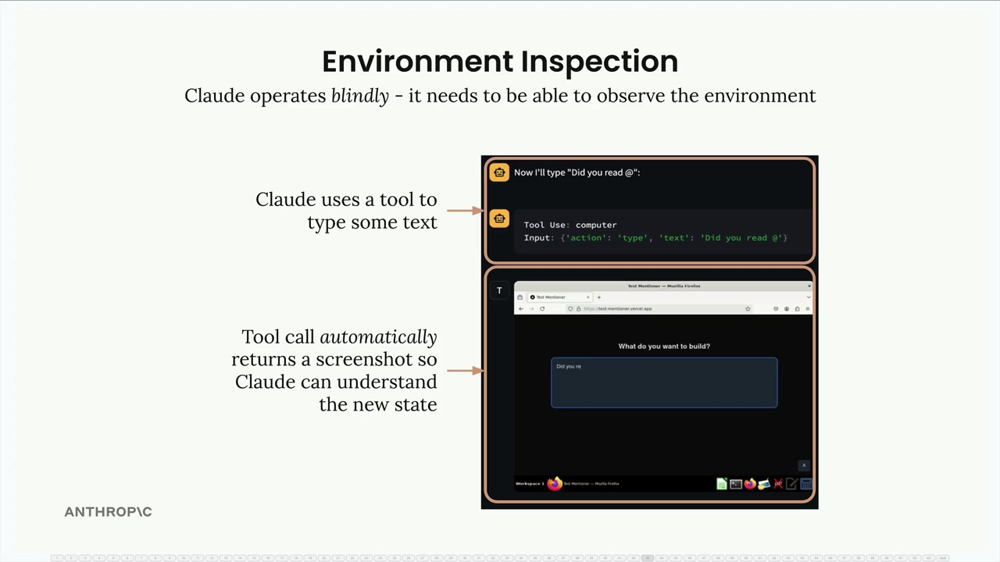
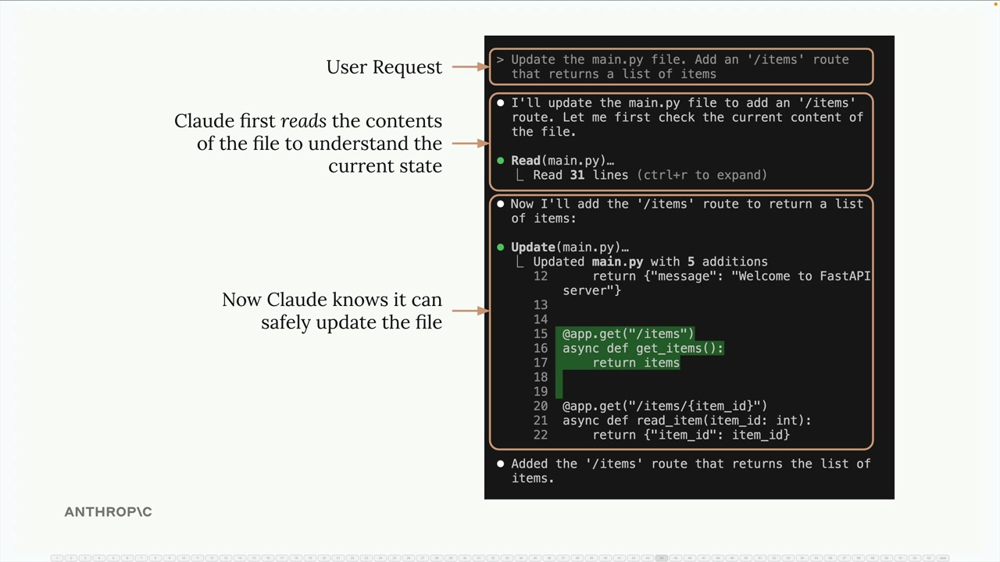
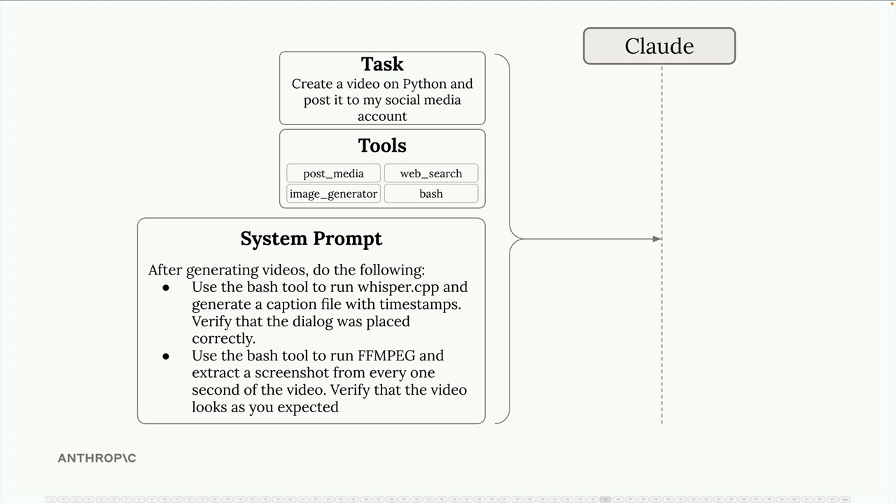

Проверка окружения
Чему научитесь
Видео 3:05 и текст урока
К концу урока вы сможете:
- объяснить, почему агенту нужно видеть результат своих действий;
- применять правило «прочитай, прежде чем писать»;
- добавлять в системный промпт инструкции по самопроверке.
Видео и текст урока.
Смотреть урок на Skilljar Environment inspection · 3:05При создании AI-агентов часто упускают одну важную идею — проверку окружения (environment inspection). Claude действует вслепую: чтобы работать эффективно, ему нужно иметь возможность наблюдать и понимать результаты своих действий.
Почему проверка окружения важна
Вспомните, как Claude работает с computer use. Каждый раз, когда Claude выполняет действие — например, вводит текст или нажимает кнопку, — он сразу получает скриншот, чтобы понять, что произошло. Это не просто приятная функция, а необходимость.

С точки зрения Claude нажатие кнопки может открыть новую страницу, меню или вызвать любые другие изменения. Не видя результата, Claude никак не может понять, удалось ли действие и как теперь выглядит окружение.
Прочитай, прежде чем писать
Тот же принцип действует и для работы с файлами. Прежде чем изменить файл, Claude нужно понять его текущее содержимое. Это кажется очевидным, но этому шаблону стоит всегда следовать при создании агентов.

main.py), потом Update — добавлена функция get_items.В примере выше, когда Claude просят добавить новый маршрут в файл Python, он сначала читает существующий код, чтобы понять текущую структуру. Только после этого он может безопасно внести изменения, не сломав существующую функциональность.
Системные промпты для проверки окружения
Направлять Claude на проверку окружения можно через системный промпт. Для сложных задач, например генерации видео, это особенно важно.

post_media, web_search, image_generator, bash) и системный промпт с инструкциями по самопроверке.Представьте агента для создания видео, которому нужно:
- генерировать видео с помощью инструментов вроде FFmpeg;
- проверять, что озвученный текст стоит в правильных местах;
- проверять, что визуальные элементы выглядят как задумано.
В системный промпт можно включить такие инструкции:
- с помощью инструмента bash запусти whisper.cpp и создай файл субтитров с таймкодами, чтобы проверить расположение реплик;
- с помощью FFmpeg извлекай кадры из видео через равные промежутки, чтобы визуально проверить результат;
- сравни созданный контент с исходными требованиями.
Текст системного промпта на слайде:
After generating videos, do the following: - Use the bash tool to run whisper.cpp and generate a caption file with timestamps. Verify that the dialog was placed correctly. - Use the bash tool to run FFMPEG and extract a screenshot from every one second of the video. Verify that the video looks as you expected
Что даёт проверка окружения
Когда Claude может проверять окружение, улучшается сразу несколько вещей:
- Отслеживание прогресса — Claude может оценить, насколько близко он к завершению задачи;
- Обработка ошибок — неожиданные результаты можно обнаружить и исправить;
- Контроль качества — результат можно проверить до того, как считать задачу выполненной;
- Адаптивное поведение — Claude может менять подход в зависимости от того, что наблюдает.
Практическая реализация
Проектируя своих агентов, всегда спрашивайте себя: «Как Claude узнает, что это действие сработало?» Работаете ли вы с файлами, API или пользовательскими интерфейсами — давайте инструменты и инструкции, которые позволяют Claude наблюдать результаты своих действий.
Это может означать:
- читать содержимое файла перед изменением;
- делать скриншоты после действий в интерфейсе;
- проверять, что в ответах API есть ожидаемые данные;
- сверять созданный контент с требованиями.
Проверка окружения превращает Claude из слепого исполнителя команд в агента, который действительно понимает рабочую среду и подстраивается под неё.
Дальше
Последний урок раздела — сравнение workflow и агентов: плюсы, минусы и что выбирать.
Оригинал урока: Environment inspection.